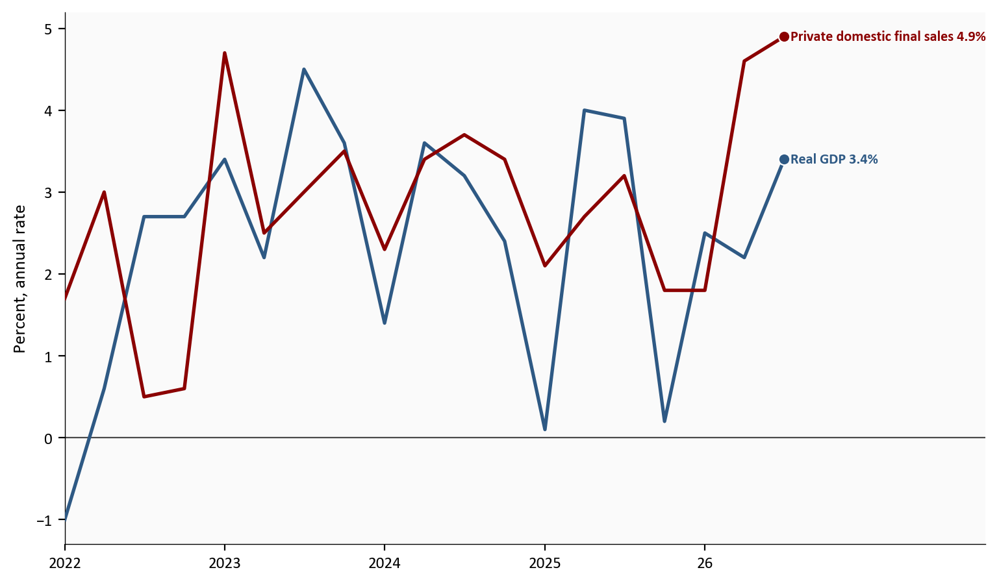
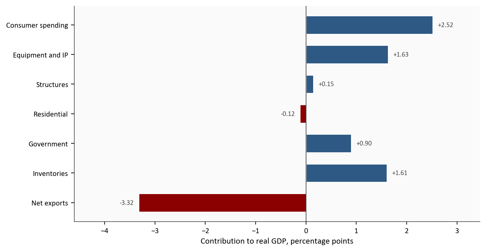
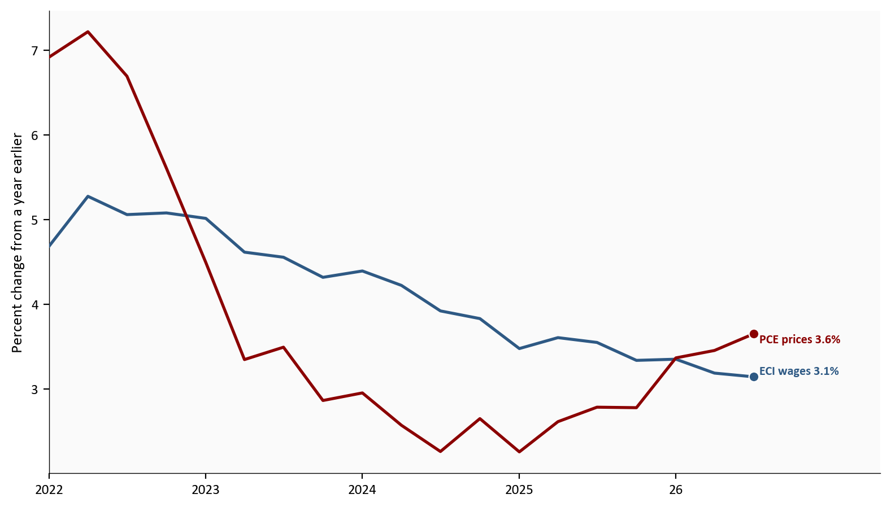
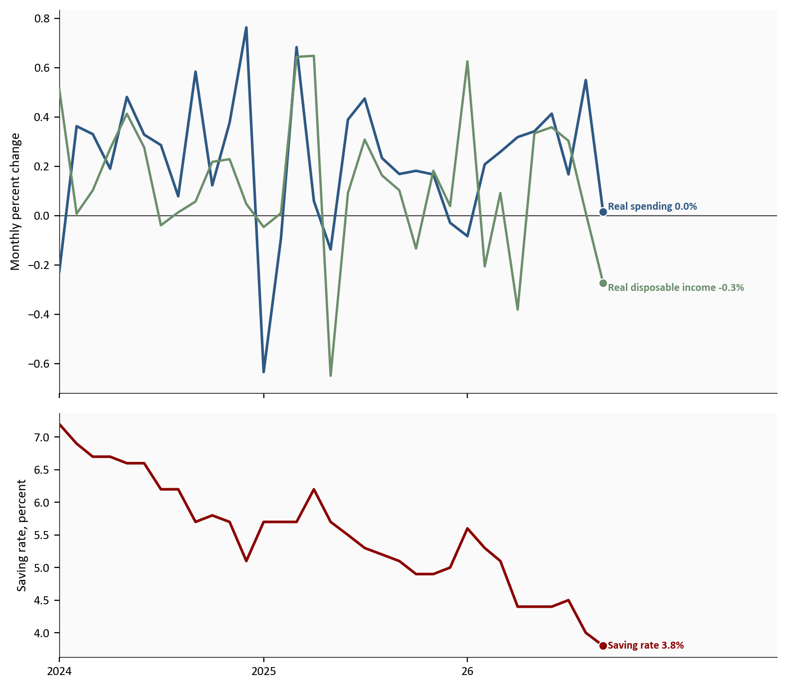

Real GDP
3.4%
Q3 2026
Private final sales
4.9%
Q3 2026
Real private wages
-0.6%
September 2026
Saving rate
3.8%
September 2026
Advance estimate Q3 2026 and personal income for September 2026. Source: BEA and BLS.
Yoram Gilboa
October 31, 2026
On October 29, 2026 the Bureau of Economic Analysis released its first estimate of third-quarter output. Real GDP rose at a 3.4% annual rate, up from 2.2% in Q2 2026. An annual rate takes that quarter’s pace and scales it to a full year. It is not a forecast.
Private domestic demand ran faster than that headline. Real final sales to private domestic purchasers rose 4.9%, after 4.6% in the prior quarter. The same morning, real consumer spending in September 2026 rose less than 0.1%. A strong quarter and a stalled final month are two different facts.
The Python that draws each chart is in this post. Open a code block to see it. The data pipeline for this post is:
scripts/01_fetch_data.py checks the saved FRED snapshot and does not download on a normal runscripts/02_clean_data.py builds the % changes used in the chartsscripts/04_compute_stats.py writes stats/summary_stats.json, which is the source of the numbers in the textGDP and the personal income accounts are the October 29, 2026 vintage. The Employment Cost Index is the October 30, 2026 vintage. Payrolls are the October 2, 2026 Employment Situation. Initial claims are the October 29, 2026 vintage. Primary pages: BEA GDP advance estimate, BEA personal income and outlays, and the BLS Employment Cost Index.
The annualized change in computer prices is calculated from the published price index. BEA’s headline tables do not print that rate. The constant-dollar wage change and the private health-benefit change are copied from the BLS news release. They are not recomputed from a price index in this file. The advance estimate is the first of three published looks at the quarter. BEA’s next look is scheduled for November 25, 2026.
Advance estimate Q3 2026 and personal income for September 2026. Source: BEA and BLS.
Real GDP is the inflation-adjusted value of final goods and services produced in the United States. Imports are subtracted, because the measure is domestic production, not everything residents buy.
Real final sales to private domestic purchasers leave out inventories, net exports, and government. What remains is household consumption plus private fixed investment: equipment, structures, intellectual property, and housing bought to be used. That is the private-demand rate in the first chart.
Final sales of domestic product keep government and trade and remove only the inventory change. They are not a line on the first chart. When GDP and those final sales move apart, inventories are the wedge.
The Employment Cost Index, or ECI, holds the mix of jobs fixed and tracks what employers pay. Wages are one part. Benefits are the other. Hiring a different mix of workers does not by itself move the index. The ECI is on the third chart. Payrolls and unemployment claims are not.
In Q3 2026, real GDP rose 3.4% and private domestic final sales rose 4.9%. In Q2 2026 those rates were 2.2% and 4.6%. Consumer spending, which is inside private demand, rose at 3.8% in both quarters. Its contribution was 2.51 pp, then 2.52 pp. A contribution in pp is how many points that piece added to the GDP % rate. Household spending grew at the same rate in both quarters. The faster GDP print came from the other pieces.
The blue line below is real GDP. The red line is real final sales to private domestic purchasers. Both end in Q3 2026. Final sales of domestic product, which slowed from 2.8% to 1.7%, are not drawn.
growth = pd.read_csv(CLEAN_DIR / "gdp_quarterly.csv", index_col="date", parse_dates=True).sort_index()
# These columns are already annualized percent changes.
window = growth.loc["2022-01-01":].copy()
fig, ax = plt.subplots(figsize=(8.0, 4.6))
series = [
("gdp_saar", "Real GDP", COLORS["primary"]),
("pdfp_saar", "Private domestic final sales", COLORS["accent"]),
]
for column, name, color in series:
ax.plot(window.index, window[column], color=color, linewidth=1.9, zorder=3)
last_x = window.index[-1]
last_y = float(window[column].iloc[-1])
ax.scatter(last_x, last_y, s=40, color=color, zorder=5, edgecolors="white", linewidth=0.8)
ax.text(last_x, last_y, f" {name} {last_y:.1f}%", color=color, fontsize=8, fontweight="bold", va="center")
ax.set_ylabel("Percent, annual rate")
ax.axhline(0, color=COLORS["neutral"], linewidth=0.8)
year_span_ticks(ax, window.index)
extend_xlim(ax, window.index, 0.28)
plt.tight_layout()
fig.savefig(IMG_DIR / "gdp-private-demand.png", dpi=150, bbox_inches="tight")
Source: BEA GDP advance estimate, October 29, 2026 vintage, via FRED series A191RL1Q225SBEA and PB0000031Q225SBEA.
What this chart shows in plain English. GDP sped up from 2.2% to 3.4%, and private demand stayed faster, at 4.9%. The 3.4% headline is therefore a slower pace than private demand. Do not read the blue line as household and business spending. Earlier quarters on the chart sometimes had GDP on top. This quarter does not.
The bars below are Q3 2026 contributions to real GDP, in pp. Consumer spending, structures, residential investment, inventories, net exports, and government are published BEA lines. The equipment-and-IP bar is not one of those lines. It adds the published equipment contribution (1.16 pp) to the published intellectual-property contribution (0.47 pp). The sum is 1.63 pp. Those seven bars add to 3.37 pp. The headline prints as 3.4% after rounding.
BEA said the equipment increase was led by information processing equipment, mainly computers and peripheral equipment. Computers and peripherals contributed 0.72 pp inside that equipment line.
The computers and peripherals price index rose at a calculated 24.4% annual rate in Q3 2026, after 30.9% in Q2 2026. Those rates come from the published price index. BEA does not print them as a headline rate. The rise is composition inside equipment spending, and it is not a measure of AI output.
contrib = pd.read_csv(CLEAN_DIR / "gdp_quarterly.csv", index_col="date", parse_dates=True).sort_index()
latest = contrib.index[-1]
# equipment_ip_pp is already the sum of the two published contribution series.
rows = [
("Consumer spending", float(contrib.loc[latest, "pce_pp"])),
("Equipment and IP", float(contrib.loc[latest, "equipment_ip_pp"])),
("Structures", float(contrib.loc[latest, "structures_pp"])),
("Residential", float(contrib.loc[latest, "residential_pp"])),
("Government", float(contrib.loc[latest, "government_pp"])),
("Inventories", float(contrib.loc[latest, "inventories_pp"])),
("Net exports", float(contrib.loc[latest, "net_exports_pp"])),
]
rows = list(reversed(rows))
labels = [name for name, _ in rows]
values = [value for _, value in rows]
colors = [COLORS["primary"] if value >= 0 else COLORS["accent"] for value in values]
y = np.arange(len(labels))
fig, ax = plt.subplots(figsize=(8.0, 4.2))
ax.barh(y, values, color=colors, edgecolor="white", height=0.62)
ax.axvline(0, color=COLORS["neutral"], linewidth=0.8)
span = max(abs(min(values)), abs(max(values)))
pad = span * 0.03
for i, value in enumerate(values):
ax.text(
value + (pad if value >= 0 else -pad),
y[i],
f"{value:+.2f}",
va="center",
ha="left" if value >= 0 else "right",
fontsize=8,
color=COLORS["neutral"],
)
ax.set_yticks(y)
ax.set_yticklabels(labels)
ax.set_xlabel("Contribution to real GDP, percentage points")
low, high = min(values), max(values)
width = high - low
ax.set_xlim(low - width * 0.22, high + width * 0.16)
plt.tight_layout()
fig.savefig(IMG_DIR / "gdp-contributions.png", dpi=150, bbox_inches="tight")
Source: BEA contributions to percent change in real GDP, October 29, 2026 vintage, via FRED. Equipment and intellectual property are summed for one bar.
What this chart shows in plain English. Inventories swung to 1.61 pp and net exports to -3.32 pp, while consumer spending stayed near 2.52 pp. Those bars, after rounding, are the 3.4% headline. The speedup is not a jump in household spending. BEA did not publish the equipment-and-IP bar as one line. It is the sum of two published contributions, 1.16 pp and 0.47 pp. Imports inside net exports rose at a 19.7% annual rate. BEA said petroleum led the export drop, and capital goods except automotive led the import rise.
Government contributed 0.90 pp. Federal spending, which is not its own bar, contributed 0.91 pp. BEA said smaller sales from the Strategic Petroleum Reserve raised measured government spending, and that the oil is counted elsewhere, so the total GDP figure does not change. Residential investment contributed -0.12 pp. Housing did not make the headline faster.
In the quarter, wages rose 0.7%, compensation 0.8%, and benefits 0.9%. Over the year those rates were 3.1%, 3.4%, and 3.9%. Private health benefits rose 6.4%. Benefits were the faster piece.
The official real wage for private industry was -0.6% over the year. BLS gets that by comparing wages with the consumer price index. It is not a line on the chart. Blue is ECI wages, 3.1% in Q3 2026. Red is the PCE price index that quarter, 3.6%. The gap is -0.5 pp.
eci = pd.read_csv(CLEAN_DIR / "eci_quarterly.csv", index_col="date", parse_dates=True).sort_index()
# wages_yoy uses the not-seasonally-adjusted ECI. pce_yoy is the PCE price
# index in the last month of that quarter. Both columns are already rates.
gap = eci.loc["2022-01-01":, ["wages_yoy", "pce_yoy"]].copy()
fig, ax = plt.subplots(figsize=(8.0, 4.6))
wage_lines = [
("wages_yoy", "ECI wages", COLORS["primary"], "bottom"),
("pce_yoy", "PCE prices", COLORS["accent"], "top"),
]
for column, name, color, valign in wage_lines:
ax.plot(gap.index, gap[column], color=color, linewidth=1.9, zorder=3)
last_x = gap.index[-1]
last_y = float(gap[column].iloc[-1])
ax.scatter(last_x, last_y, s=40, color=color, zorder=5, edgecolors="white", linewidth=0.8)
ax.text(last_x, last_y, f" {name} {last_y:.1f}%", color=color, fontsize=8, fontweight="bold", va=valign)
ax.set_ylabel("Percent change from a year earlier")
year_span_ticks(ax, gap.index)
extend_xlim(ax, gap.index, 0.18)
plt.tight_layout()
fig.savefig(IMG_DIR / "eci-wage-gap.png", dpi=150, bbox_inches="tight")
Source: BLS Employment Cost Index, October 30, 2026 vintage, and the BEA PCE price index, October 29, 2026 vintage, via FRED. The official constant-dollar wage print uses the CPI, not this PCE comparison.
What this chart shows in plain English. Official real wages were -0.6% over the year. On the chart, wage growth ends below PCE prices, a gap of -0.5 pp. Beside a 3.4% GDP rate, that is not a story of fatter paychecks. Do not treat the chart gap as the official CPI figure. Benefits rose faster than wages, so part of the pay package is in benefit costs rather than cash.
September prices use a different window from the quarterly pace. On the seasonally adjusted PCE price index, September 2026 rose 0.5%, and the year rate moved from 3.4% to 3.6% because that month replaced the same month a year earlier, when the index rose 0.3%. Core follows the same step: 0.3% on the month and 3.1% over the year. The quarter’s own price pace slowed to 2.1% from 5.0% for the headline index, and to 2.5% from 3.3% for core, because a year rate still contains the earlier months. Those monthly rates are not lines on the chart.
Real consumer spending in September 2026 rose less than 0.1%, or 0.0% at one decimal. That is about 2.6 billion dollars at a yearly pace, not the cash spent that month. Spending before prices rose 0.5%. Income and after-tax income each rose 0.2%. After prices, after-tax income was -0.3% in the month, and 2.3% at an annual rate for the quarter after -0.2% in Q2 2026.
The saving rate was 3.8%, down from 4.0% in August 2026. It is saving as a share of disposable income. In the figure, the top panel’s blue line is the monthly change in real spending and the green line is the monthly change in real disposable income. The bottom panel is the saving rate. All three end in September 2026.
household = pd.read_csv(CLEAN_DIR / "pce_monthly.csv", index_col="date", parse_dates=True).sort_index()
household = household.loc["2024-01-01":].copy()
fig, axes = plt.subplots(
2, 1, figsize=(8.0, 7.0), sharex=True, gridspec_kw={"height_ratios": [2.2, 1.4]}
)
axes[0].plot(household.index, household["real_pce_mom"], color=COLORS["primary"], linewidth=1.9, zorder=3)
axes[0].plot(household.index, household["real_dpi_mom"], color=COLORS["secondary"], linewidth=1.7, zorder=3)
axes[0].axhline(0, color=COLORS["neutral"], linewidth=0.8)
for column, name, color, valign in (
("real_pce_mom", "Real spending", COLORS["primary"], "bottom"),
("real_dpi_mom", "Real disposable income", COLORS["secondary"], "top"),
):
last_x = household.index[-1]
last_y = float(household[column].iloc[-1])
axes[0].scatter(last_x, last_y, s=40, color=color, zorder=5, edgecolors="white", linewidth=0.8)
axes[0].text(last_x, last_y, f" {name} {last_y:.1f}%", color=color, fontsize=8, fontweight="bold", va=valign)
axes[0].set_ylabel("Monthly percent change")
axes[1].plot(household.index, household["saving"], color=COLORS["accent"], linewidth=1.9, zorder=3)
last_x = household.index[-1]
last_y = float(household["saving"].iloc[-1])
axes[1].scatter(last_x, last_y, s=40, color=COLORS["accent"], zorder=5, edgecolors="white", linewidth=0.8)
axes[1].text(last_x, last_y, f" Saving rate {last_y:.1f}%", color=COLORS["accent"], fontsize=8, fontweight="bold", va="center")
axes[1].set_ylabel("Saving rate, percent")
year_span_ticks(axes[1], household.index)
extend_xlim(axes[1], household.index, 0.32)
plt.tight_layout()
fig.savefig(IMG_DIR / "household-september.png", dpi=150, bbox_inches="tight")
Source: BEA personal income and outlays, October 29, 2026 vintage, via FRED series PCEC96, DSPIC96, and PSAVERT.
What this chart shows in plain English. Real spending ended near 0.0%, real after-tax income at -0.3%, and the saving rate at 3.8%. The consumption rate inside the 3.4% GDP print was 3.8% for the whole quarter. Do not read that quarterly rate as the pace of September 2026. The last month stalled.
Payrolls and claims are not on this figure. Nonfarm payrolls rose 29,000 in September 2026, from the Employment Situation released on October 2, 2026. Initial claims were 194,000 in the week ended October 24, 2026. Few new filings and a small net job gain are different facts.
The 3.4% headline is strong private demand, plus an inventory boost, minus a large import drag, while household pay lagged prices.
Real GDP rose 3.4%. Real final sales to private domestic purchasers rose 4.9%. Final sales of domestic product rose 1.7%. Those are three rates.
Computers contributed 0.72 pp inside equipment, and imports contributed -2.64 pp. BEA did not publish how many of those machines were made abroad. Inventories contributed 1.61 pp after -0.53 pp. Private demand was faster than GDP, and GDP was faster than final sales of domestic product because inventories added. In September 2026, real spending rose less than 0.1% and the official real wage was -0.6%. The quarter’s spending rate does not describe September.
For the Fed. Private demand was firm. September PCE prices were up 3.6% over the year, core was up 3.1%, and the quarterly price pace was a slower 2.1%. ECI wages did not accelerate. Payrolls rose 29,000, and new unemployment filings were low. The year rate, the quarterly price pace, and the GDP headline are three different facts.
For households. Spending in the national accounts grew at a 3.8% annual rate, and September did not extend it. Real after-tax income fell in the month. The saving rate is 3.8%. Private-industry wages were -0.6% after inflation over the year, while health benefits rose 6.4%. With saving that low and real wages negative, September real spending stalled even while the quarterly consumption rate looked steady. More of the compensation gain is in benefit costs than in the paycheck.
For investors. The equipment gain and the import drag are one quarter’s accounts. Inventory and trade often move when BEA fills in more data. The next estimate is due November 25, 2026, with the October income report the same morning. Until then, 3.4% is the advance GDP print and 4.9% is the private-demand print beside it.
For P&C insurance. Health benefits rose 6.4% over the year. That is an employer medical-cost index, not a loss ratio. PCE prices are up 3.6% over the year even though the quarterly pace slowed to 2.1%. A claims trend read off the quarter alone would miss the year rate. The 3.8% saving rate and the drop in real wages are a household-budget backdrop for personal auto and homeowners. They are not a premium forecast.
The second estimate of third-quarter GDP, and the October personal income and outlays report, are scheduled for November 25, 2026. Before that, the BLS calendar lists the Job Openings and Labor Turnover Survey on November 3, 2026, the Employment Situation on November 6, 2026, the Consumer Price Index on November 10, 2026, and the Producer Price Index on November 13, 2026. The dates are from the BLS November schedule and the BEA release note. Those later releases are not in this file yet. The open questions are whether October hiring stays near September’s 29,000, and whether the next GDP pass revises inventories, imports, or equipment.
This is the advance estimate, the first of three published looks at the quarter. Inventories, exports, and imports often change when more complete source data arrive. BEA says the equipment estimate rests primarily on import data, so the next GDP revision can move that line. The equipment-and-IP bar adds two published contributions. It is a grouping, not a BEA line. The bars add to 3.37 pp, which rounds to the 3.4% headline. No fixed-weight shortcut was used for GDP. The ECI holds employment weights fixed by design.
The wage chart’s gap uses PCE inflation. The BLS real-wage figure uses the CPI. The two rates are different numbers. The computer-price rates in the note above are calculated from the published index. The September dollar figure is a change in a yearly pace, measured in chained 2017 dollars. It is not the cash households spent that month.
Real GDP rose 3.4%, and private domestic final sales rose 4.9%. Consumer spending grew at 3.8% in both quarters. Inventories added, imports subtracted, and computers were a large piece of equipment. That is a composition fact, and it is not a measure of AI output. In September 2026, real spending rose less than 0.1%, the saving rate was 3.8%, and private-industry real wages were -0.6% over the year. Hold both prints in view: 3.4% is the first official GDP rate, and 4.9% is the private-demand rate beside it. Inventories and trade are the lines most likely to move next.
The charts and the numbers in the text use a saved snapshot of public series, not a fresh download at reading time. GDP and the personal income accounts are the October 29, 2026 BEA vintage. The ECI is the October 30, 2026 BLS vintage. Payrolls are the October 2, 2026 Employment Situation. Initial claims are the October 29, 2026 vintage. Each chart’s code is in the page. Open “Show code” under a figure to see the plot. The collapsed note near the top names the three pipeline scripts and the agency pages.
| Series in plain English | What this post uses | Source |
|---|---|---|
| Real GDP and private domestic final sales | Quarterly annualized growth through Q3 2026 | BEA advance estimate. FRED: A191RL1Q225SBEA, PB0000031Q225SBEA. |
| Contributions, including equipment, intellectual property, inventories, trade, housing, and government | Contributions in pp. Equipment and IP are summed for one bar. | Same BEA vintage. Computers are B935RY2Q224SBEA. |
| PCE prices, real spending, real disposable income, and the saving rate | September changes and the quarterly price pace | BEA personal income and outlays. FRED: PCEPI, PCEPILFE, PCEC96, DSPIC96, PSAVERT. |
| Employment Cost Index | Wages, benefits, compensation, health benefits, and the CPI-based real wage | BLS Employment Cost Index. |
| Payrolls and initial claims | September payroll change and the latest claims week. Prose only. | Employment Situation archive and FRED ICSA. |
Source: Bureau of Economic Analysis and Bureau of Labor Statistics, vintages listed above.
Data current as of October 30, 2026. The GDP advance estimate and the September personal income report were released on October 29, 2026. The Employment Cost Index was released on October 30, 2026.